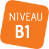

Comprendre des mots familiers et des expressions très courantes au
sujet de moi-même, de ma famille et de l'environnement concret et
immédiat, si les gens parlent lentement et distinctement. Ecrire une
courte carte postale simple, par exemple, de vacances. Porter des
détails personnels dans un questionnaire, inscrire par exemple mon
nom, ma nationalité et mon adresse sur une fiche d'hôtel. Comprendre
des noms familiers, des mots, ainsi que des phrases très simples,
par exemple dans des annonces, des affiches ou des catalogues.
Utiliser des expressions et des phrases simples pour décrire mon
lieu d'habitation et les gens que je connais. Communiquer de façon
simple, à condition que l'interlocuteur soit disposé à répéter ou à
reformuler ses phrases plus lentement et à m'aider à formuler ce que
j'essaie de dire. Poser des questions simples sur des sujets
familiers, ou sur ce dont j'ai immédiatement besoin, ainsi que
répondre à de telles questions.
Comprendre des expressions et un vocabulaire très fréquent relatifs
à ce qui me concerne de très près (par ex. moi-même, ma famille, les
achats, l'environnement proche, le travail). Saisir l'essentiel
d'annonces et de messages simples et clairs. Ecrire des notes et
messages simples et courts. Ecrire une lettre personnelle très
simple, par exemple des remerciements. Lire des textes courts très
simples. Trouver une information particulière prévisible dans des
documents courants comme les petites publicités, les prospectus, les
menus et les horaires. Comprendre des lettres personnelles courtes
et simples. Utiliser une série de phrases ou d'expressions pour
décrire en termes simples ma famille et d'autres gens, mes
conditions de vie, ma formation et mon activité professionnelle
actuelle ou récente. Communiquer lors de tâches simples et
habituelles ne demandant qu'un échange d'informations simple et
direct sur des sujets et des activités familiers. Avoir des échanges
très brefs même si, en règle générale, je ne comprends pas assez
pour suivre une conversation.

Je peux comprendre les points essentiels quand un langage clair et
standard est utilisé et s'il s'agit de sujets familiers concernant
le travail, l'école, les loisirs, etc. Je peux comprendre
l'essentiel de nombreuses émissions de radio ou de télévision sur
l'actualité ou sur des sujets qui m'intéressent à titre personnel ou
professionnel si l'on parle d'une façon relativement lente et
distincte Je peux écrire un texte simple et cohérent sur des sujets
familiers ou qui m'intéressent personnellement. Je peux écrire des
lettres personnelles pour décrire expériences et impressions. Je
peux comprendre des textes rédigés essentiellement dans une langue
courante ou relative à mon travail. Je peux comprendre la
description d'événements, l'expression de sentiments et de souhaits
dans des lettres personnelles. Je peux articuler des expressions de
manière simple afin de raconter des expériences et des événements,
mes rêves, mes espoirs ou mes buts. Je peux brièvement donner les
raisons et explications de mes opinions ou projets. Je peux raconter
une histoire ou l'intrigue d'un livre ou d'un film et exprimer mes
réactions. Je peux faire face à la majorité des situations que l'on
peut rencontrer au cours d'un voyage dans une région où la langue
est parlée. Je peux prendre part sans préparation à une conversation
sur des sujets familiers ou d'intérêt personnel ou qui concernent la
vie quotidienne (par exemple famille, loisirs, travail, voyage et
actualité).
Comprendre des conférences et des discours assez longs et même
suivre une argumentation complexe si le sujet m'en est relativement
familier. Comprendre la plupart des émissions de télévision sur
l'actualité et les informations et la plupart des films en langue
standard. Ecrire des textes clairs et détaillés sur une grande gamme
de sujets relatifs à mes intérêts. Ecrire un essai ou un rapport en
transmettant une information ou en exposant des raisons pour une
opinion donnée. Ecrire des lettres qui mettent en valeur le sens que
j'attribue personnellement aux événements et aux expériences Lire
des articles et des rapports sur des questions contemporaines dans
lesquels les auteurs adoptent une attitude particulière ou un
certain point de vue. Comprendre un texte littéraire contemporain en
prose. M'exprimer de façon claire et détaillée sur une grande gamme
de sujets relatifs à mes centres d'intérêt. Développer un point de
vue sur un sujet d'actualité et expliquer les avantages et les
inconvénients de différentes possibilités. Communiquer avec un degré
de spontanéité et d'aisance qui rende possible une interaction
normale avec un locuteur natif. Participer activement à une
conversation dans des situations familières, présenter et défendre
mes opinions.
Comprendre un long discours même s'il n'est pas clairement structuré
et que les articulations sont seulement implicites. Comprendre les
émissions de télévision et les films sans trop d'effort. M'exprimer
dans un texte clair et bien structuré et développer mon point de
vue. Ecrire sur des sujets complexes dans une lettre, un essai ou un
rapport, en soulignant les points que je juge importants. Adopter un
style adapté au destinataire. Comprendre des textes factuels ou
littéraires longs et complexes et en apprécier les différences de
style. Comprendre des articles spécialisés et de longues
instructions techniques même lorsqu'ils ne sont pas en relation avec
mon domaine. Présenter des descriptions claires et détaillées de
sujets complexes, en intégrant des thèmes qui leur sont liés, en
développant certains points et en terminant mon intervention de
façon appropriée. M'exprimer spontanément et couramment sans trop
apparemment devoir chercher mes mots. Utiliser la langue de manière
souple et efficace pour des relations sociales ou professionnelles.
Exprimer mes idées et opinions avec précision et lier mes
interventions à celles de mes interlocuteurs.